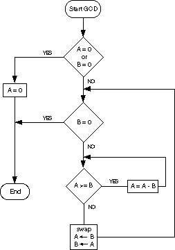
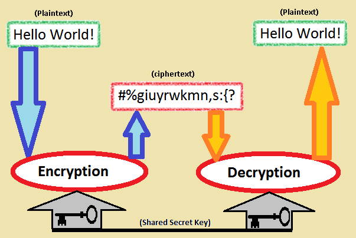
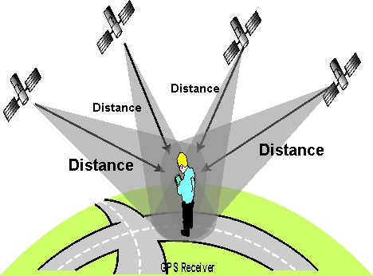
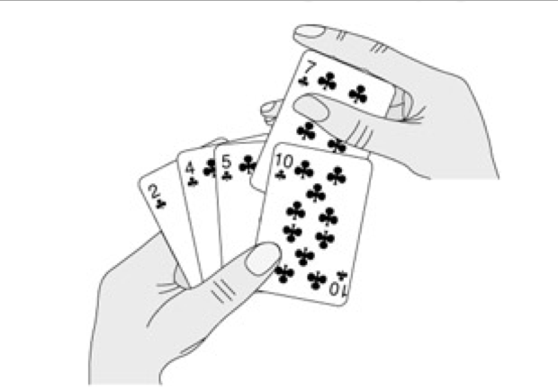

PAG

WHAT IS AN ALGORITHM?
Algorithms are precise step-by-step instructions on how to accomplish a desired task.
Examples in real life
Finding the gcd of two numbers (a,b)
Cryptography
Directions(GPS system)
Why algorithm?
- To carry out some process systematically
- Amongst all possible ways to perform a particular task we need to select the best one
- Most problems are complex Hard to see entire solution from outset
GCD (Euclid’s Algorithm)
Find the Greatest Common Divisor of two natural numbers Positive integers (a,b)
<gcd-code>
## Algorithm
While b!=0
t=b
b=a mod b
a=t
return a
</gcd-code>
Now try your hands on a problem
Binary Search
Binary search is like looking up a phone number or a word in the dictionary
- Start in middle of book
- If name you're looking for comes before names on page, look in first half
- Otherwise, look in second half
<binarysearch>
## Algorithm
If ( value == middle element )
value is found
else if ( value < middle element )
search left-half of list with the same method
else
search right-half of list with the same method
</binarysearch>
<binarysearch>
## Algorithm
Case 1: val == a[mid]
val = 10
low = 0, high = 8
mid = (0 + 8) / 2 = 4
</binarysearch>
<binarysearch>
## Algorithm
Case 2: val > a[mid]
val = 19
low = 0, high = 8
mid = (0 + 8) / 2 = 4
new low = mid+1 = 5
</binarysearch>

<binarysearch>
## Algorithm
Case 3: val < a[mid]
val = 7
low = 0, high = 8
mid = (0 + 8) / 2 = 4
new high = mid-1 = 3
</binarysearch>


Problem Revisited...
INSERTION SORT
The Idea of the insertion sort is similer to the Idea of sorting the Playing cards .
Insertion Sort
- while some elements unsorted:
- Using linear search, find the location in the sorted portion where the 1st element of the unsorted portion should be inserted
- Move all the elements after the insertion location up one position to make space for the new element
<insertionsort>
## Algorithm
INSERTION-SORT (A)
1 for j <- 2 to length[A]
2 do key <- A[j]
3 Insert A[j] into the sorted sequence A[1 . . j - 1].
4 i <- j - 1
5 while i > 0 and A[i] > key
6 do A[i + 1] <- A[i]
7 i <- i - 1
8 A[i + 1] <- key
</insertionsort>